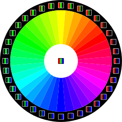
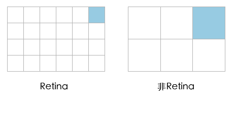
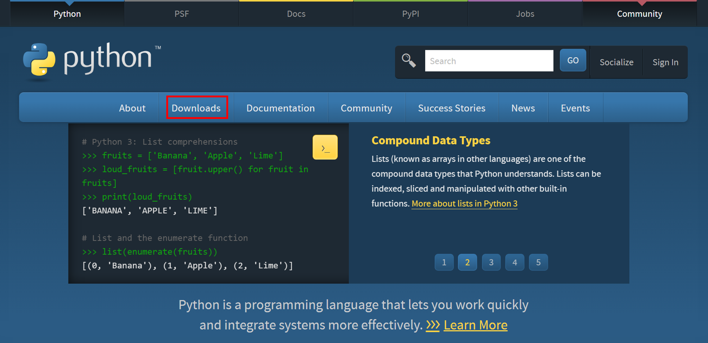
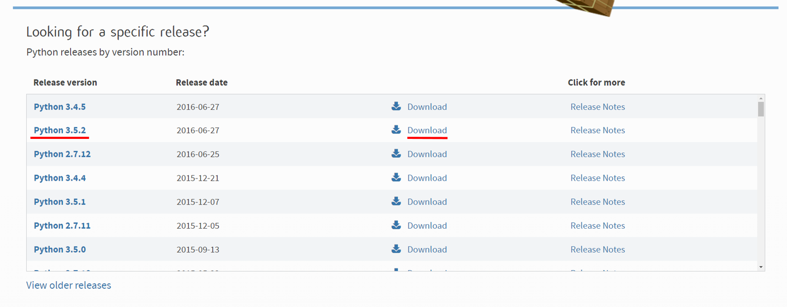
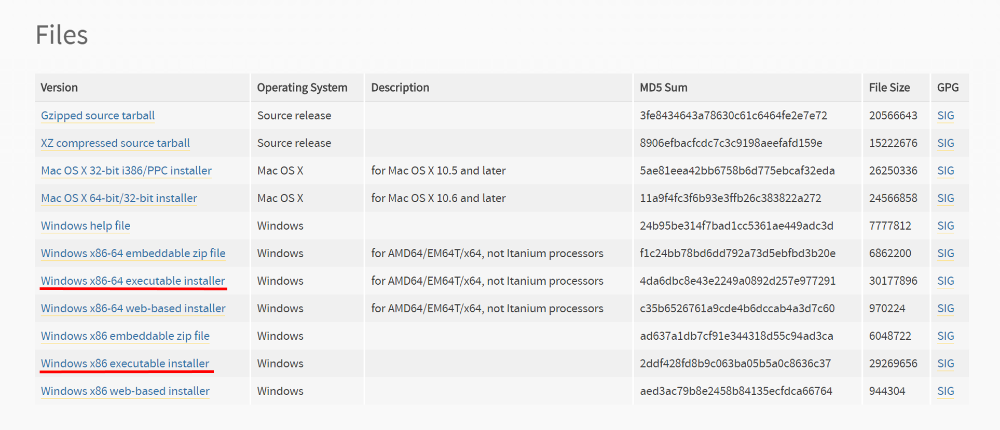
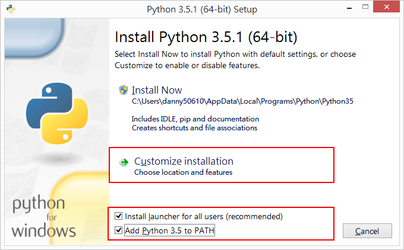
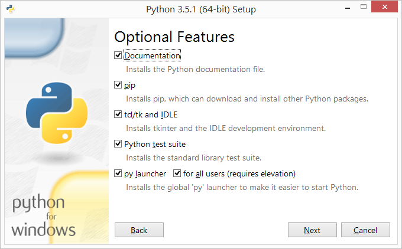
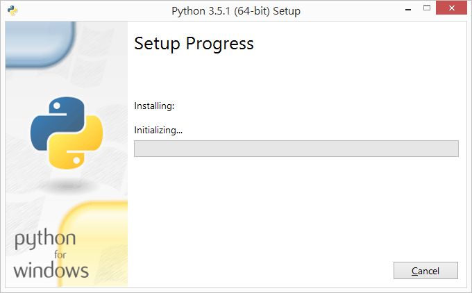
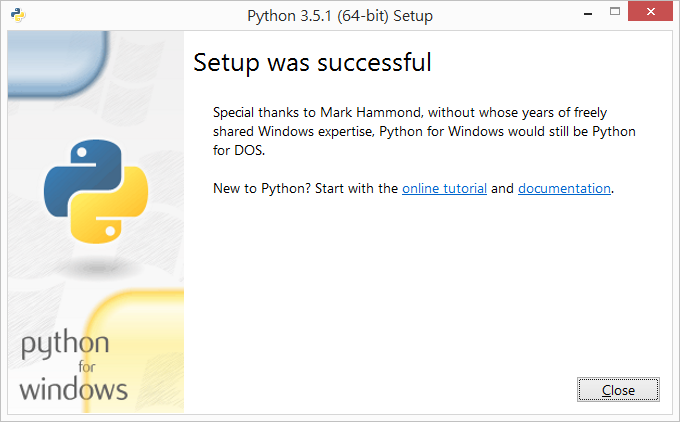
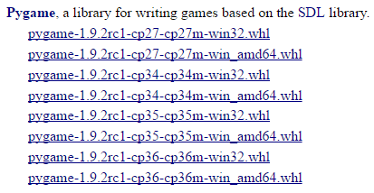

Game Library
NTUGDRC_constlecture
Created by B04莊翔旭 / @Harakuro
Game Develop
- 基礎繪圖 & 基礎控制
基礎繪圖
- 輸入圖像 & 幾何圖形
基礎控制
- 滑鼠、鍵盤按鍵
- 麥克風、攝影機
Three Example
預備知識
- Color(顏色)
- Pixel(像素)
- Coordinate(座標)
- Event(事件)
Color(顏色)
延伸閱讀
Pixel(像素)
延伸閱讀
Coordinate(座標)

Event(事件)
HTML CSS - 繪圖
Javascript - 控制
DEMO
agar.io
Excel - 繪圖
VBA - 控制
DEMO
Game2048
3DMaze
Library
繪圖兼控制
最常被問的問題
要怎麼安裝、使用？
Install Library
- 安裝 程式語言
- 安裝 Library
- 查詢 document
前往 Python Website
選擇Download
往下拉，找到Python 3.5.2 >> download
網頁往下拉到底，點選適合你電腦的版本
下載完後，執行安裝檔
預設都勾取，按下一步
按Install，如果出現UAC警告，按確定

安裝中...
安裝完成
Check Python Version
- 開啟命令提示字元(命令介面)
- 輸入python -V
前往 PyGame Download
點選相應 Python 和 電腦的版本
Shell Install
- 將 [pygame_library].whl 移到 安裝 Python 的資料夾
- 命令提示字元(命令介面)， cd 到安裝 Python 的資料夾
- 輸入 pip install [pygame_library].whl
Example and Demo
我們需要更深入一點
Other Example
- Shell Game
- Minecraft